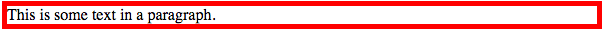
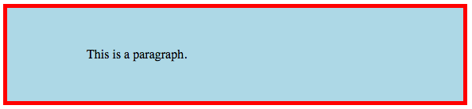
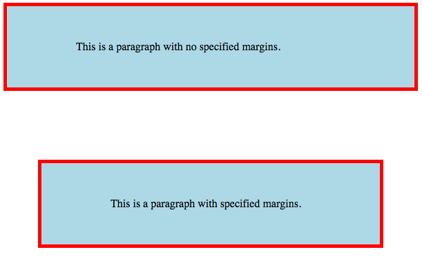

When styling a page, all HTML elements are considered boxes, which consists of the HTML content, padding, border, and margin. This is called the Box Model. The content is in the center and is surrounded by a border. Padding allows us to control the space between the element and the border, while margin allows us to place space between elements (outside of the border). Top, right, left, and bottom border, margin and padding can be styled separately. Border has a width property which refers to the weight of the line and a style (solid, dotted, dashed, etc) must be declared.
Shorthand border: 5px solid red; will produce 
background-color: lightblue; border: 5px solid red; padding: 50px 100px; wil produce: 
and p { background-color: lightblue; border: 5px solid red; padding: 50px 100px; } p.ex { margin: 100px 50px; } 
The first paragraph has no margin and the second does have margins.